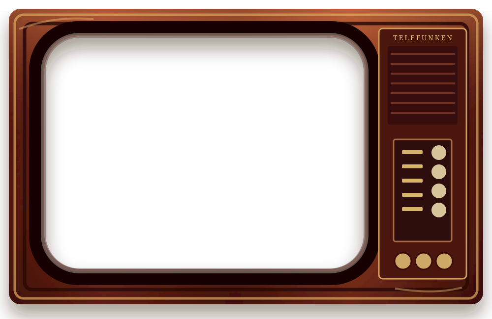
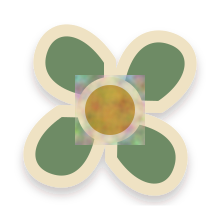
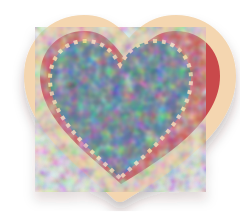
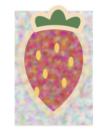

In
Memory
of
Mum




drag or swipe the corner to turn the page →
page one
Who she was
Mum was the kind of person who…
Tell her story here: her warmth, her humour, the way she loved people, and all the little things that made her feel like home.